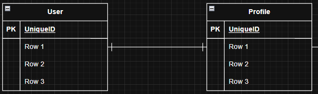
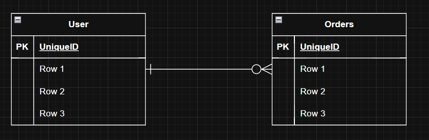
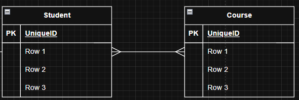
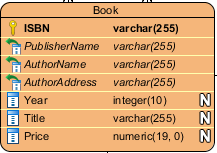
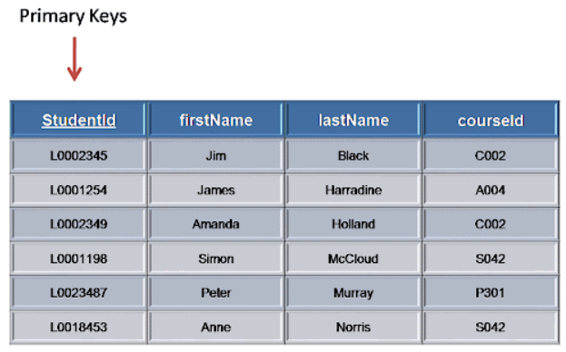
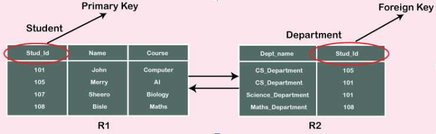
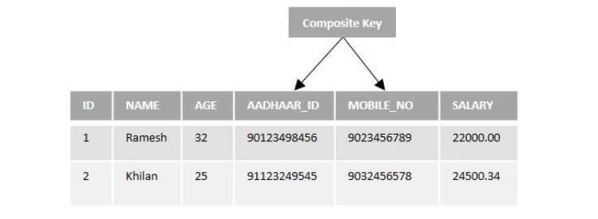

Entity-Relationship Diagram on andmebaaside modelleerimise vahend, mida kasutatakse süsteemi andmestruktuuri ja seoste visualiseerimiseks
See näitab:
ERD kasutatakse:

Siin on kujutatud seos üks ühele. Ühel kasutajal on üks profiil ja profiil kuulub ainult ühele kasutajale

Siin on kujutatud seos üks mitmele või mitte ühele. Üks kasutaja võib teha mitu tellimust ja iga tellimus kuulub ühele kasutajale.

Siin on kujutatud seos mitu mitmele. Ühel tudengil saab olla mitu kursust ja ühel kursusel saab olla mitu tudengit.
Igas tabelis peab olema:
Igas tabelis saab olla:

Primary key ehk primaarvõti, on võti, mis iseloomustab rida see võib olla ainult üks tabelis, ei saa olla NULL ja ei saa korduda.

StudentId on primary key ja see kunagi ei saa korduda.
Foreign key ehk võõrvõti, on võti, mis oli primaarvõti omas tabelis, aga läks teises ja seal ta sai võõrvõtmeks.

Näiteks siin on näha, et Stud_Id oli primaarvõti ja kui seda pandi teise tabelisse ta muutus võõrvõtmeks.
Composite key on primaarvõti, mis jagatakse kaheks või enamaks osaks.

Võtmed on spetsiaalsed väljad või väljade komplektid, mis aitavad tuvastada ja luua seoseid eri tabelite kirjete vahel.